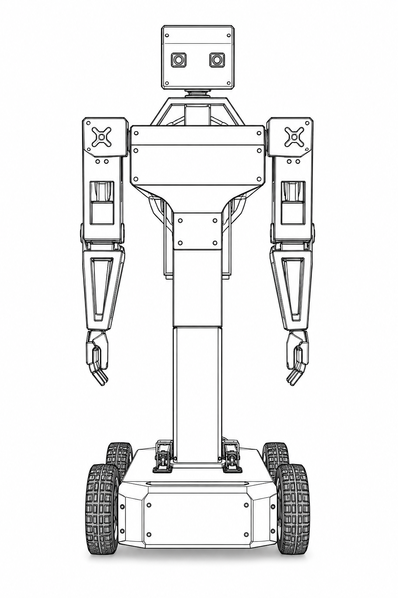

PRAYAS V1 Humanoid Robot: Engineering Knowledge Base¶
Welcome to the official, production-grade engineering documentation for PRAYAS V1 (Personal Robotic Assistant for Your Active Support).
PRAYAS V1 is an open-source, modular humanoid upper-body robot mounted on a heavy-duty motorized differential drive base deck. Designed for indoor assistance, research, human-robot interaction (HRI), and teleoperation, the platform utilizes a Distributed ESP32 Node Architecture linked via low-latency ESP-NOW and MQTT wireless protocols, integrated with an AI Node running the Xiaozhi Voice Framework and Model Context Protocol (MCP).
PRAYAS Humanoid Reference Models¶
Overall Physical Assembly & Frame Layout

Figure 1: Full System View (overall.png)
Shows the complete physical assembly of PRAYAS V1 including the 12mm plywood base deck, 4-motor differential drive base, 70cm PVC column torso, dual 3-DOF articulated arms, 2-DOF neck assembly, and isolated electrical enclosure.
Humanoid Upper-Body Kinematics & Node CAD

Figure 2: Humanoid Structural & CAD Model (prayas(2).png)
Close-up reference model highlighting the 7x MG995 high-torque servo actuator joint placements (shoulder pitch/roll, elbow flex, neck pan/tilt), ESP32-S3 CAM AI Node, SPI display screen, head camera, and internal wiring channels.
Key System Capabilities¶
- Modular Distributed Architecture: System responsibilities are decentralized across dedicated microcontrollers (Master, Motor, Servo, AI, Camera, Sensor) to guarantee deterministic real-time motion control without CPU contention.
- Real-Time Conversational AI: Xiaozhi AI Voice framework integration operating on a dedicated ESP32-S3 CAM node with an integrated SPI TFT display, I2S audio, cloud LLM bidirectional streaming, low-latency Speech-to-Text (STT), and Text-to-Speech (TTS).
- Multi-DOF Expressive Gestures: 7 × High-torque MG995 metal gear servos managed via PCA9685 I2C driver for smooth trajectory-planned gestures (greeting, pointing, node status signals).
- High-Torque 4WD Differential Drivetrain: 4 × Johnson 12V 200 RPM metal DC gear motors driven by dual 43A BTS7960 H-Bridge drivers for high payload capacity and indoor maneuverability.
- Dual-Protocol Wireless Communications: ESP-NOW peer-to-peer mesh for sub-10ms inter-node real-time control commands, paired with Wi-Fi / MQTT for web dashboard telemetry and remote override.
- Isolated Dual Power System: High-efficiency buck converters separating 12V motor power, 6V high-current servo power, and 5V/3.3V noise-sensitive logic power rails.
Technical Specifications At-a-Glance¶
| Parameter / Feature | Standard Specification | Engineering Notes / Tolerances |
|---|---|---|
| Total Height & Base Footprint | 95 cm Height | Base: 40 cm x 40 cm | 70 cm PVC torso column on 12mm plywood deck |
| Total Mass | 8.5 kg ± 0.3 kg (including battery) | Modular upper-body and base breakdown |
| Locomotion System | 4-Motor Differential Drive (4WD) | 4x Johnson 12V 200 RPM Motors + 10 cm x 4 cm Wheels |
| Motor Drive Electronics | 2x BTS7960 43A High-Power H-Bridges | 4x HC-SR04 Ultrasonic Sensors (FL, FR, RL, RR) |
| Upper Body Kinematics | 7x MG995 Servos (13 kg·cm @ 6V) | 3-DOF Left Arm, 3-DOF Right Arm, 1-DOF Neck Yaw |
| PWM Actuation Controller | PCA9685 16-Channel 12-bit I2C Module | Interfaced to Servo Control Node (ESP32) |
| Primary Gateway Processor | ESP32 DevKitC v4 (Dual-Core 240 MHz) | ESP-NOW hub, MQTT gateway, Integrated Status OLED |
| Voice & AI Processing Unit | ESP32-S3 CAM (Xiaozhi AI Framework) | Embedded 8MB PSRAM, 2.4" SPI TFT Display, I2S Mic/Amp |
| Visual Vision Sensor | ESP32-CAM (OV2640 2MP Sensor) | MJPEG streaming @ 15–30 fps via HTTP |
| Telemetry Sensor Controller | Arduino Nano v3 (ATmega328P @ 16 MHz) | GPS receiver, MPU6050 IMU, Humidity, 20x4 I2C LCD |
| Main Power Cell | 3S 6800 mAh Li-Ion Battery Pack (11.1V–12.6V) | High-current XT60 dual disconnect switch |
| DC Voltage Regulation | High-efficiency LM2596 / XL4015 Bucks | 6.0V @ 10A (Servos), 5.0V @ 5A (Logic) |
System Architecture Topology¶
graph TD
User([User / Operator Interface]) <--> Voice[Xiaozhi Voice AI Assistant]
User <--> Web[Web Dashboard Teleoperation Panel]
subgraph AI_Layer ["AI & Vision Processing Layer"]
Voice <--> AI_Node[AI Node: ESP32-S3 CAM & SPI Display]
Cam_Node[Camera Node: ESP32-CAM] --> Web
end
subgraph Core_Control ["Central Command Gateway"]
Master[Master Gateway Node: ESP32 DevKitC]
end
subgraph Hardware_Nodes ["Real-Time Execution Controllers"]
Motor_Node[Motor Control Node: ESP32]
Servo_Node[Servo Motion Node: ESP32]
Sensor_Node[Sensor & Telemetry Node: Arduino Nano]
end
AI_Node <-->|MQTT / Wi-Fi| Master
Web <-->|MQTT / WebSocket| Master
Master <-->|ESP-NOW (<10ms)| Motor_Node
Master <-->|ESP-NOW (<10ms)| Servo_Node
Master <-->|UART / I2C| Sensor_Node
Motor_Node -->|Dual PWM| BTS7960[BTS7960 43A H-Bridges] -->|12V Rail| Motors[4x Johnson 12V DC Motors]
Servo_Node -->|I2C Bus| PCA[PCA9685 16-Ch PWM Driver] -->|6V Rail| Servos[7x MG995 Metal Servos]
Sensor_Node -->|Digital / Analog| Distance[Ultrasonic & Voltage Sensors]Distributed Node Breakdown¶
1. Master Gateway Node [NODE-01_MASTER] (ESP32)¶
- Role: Primary central gateway and command arbiter (PRAYAS Control Manager).
- Responsibilities: Handles ESP-NOW peer synchronization, processes incoming inputs from 5 control modalities (Voice, Remote, Gamepad, Local Web, Autonomous), performs 7-tier control arbitration (E-Stop > Local Safety > Gamepad > Remote > Local Web > Voice AI > Autonomous), and broadcasts target velocity/pose states to execution nodes.
2. Motor Locomotion Controller [NODE-02_MOTOR] (ESP32)¶
- Role: High-speed locomotion controller.
- Responsibilities: Executes differential drive kinematics calculations, converts linear/angular velocity targets (\(v, \omega\)) into 4-wheel PWM duty cycles, manages acceleration/deceleration ramps, and drives 2x BTS7960 H-bridges.
3. Servo Kinematics Controller [NODE-03_SERVO] (ESP32)¶
- Role: Expressive kinematic gesture manager.
- Responsibilities: Communicates over I2C with the PCA9685 16-channel PWM generator, calculates smooth multi-joint cubic spline trajectories for 7x MG995 servos, and triggers predefined motion presets (wave, bow, point, idle breathing).
4. Natural Language AI Node [NODE-04_AI] (XIAO ESP32-S3)¶
- Role: Natural language interface and smart assistant.
- Responsibilities: Captures digital audio via I2S microphone, runs Xiaozhi framework wake-word detection, streams audio frames to cloud LLM endpoint over WebSocket, plays incoming TTS audio through MAX98357A I2S DAC amp, and parses Model Context Protocol (MCP) tool calls into robot actions.
5. Vision Camera Node [NODE-05_CAM] (ESP32-CAM)¶
- Role: Visual awareness & live streaming.
- Responsibilities: Captures video frames from OV2640 camera sensor, serves high-performance MJPEG video feed on dedicated HTTP port for web teleoperation, and supports optional face/object detection frames.
6. Sensor & Telemetry Controller [NODE-06_SENS] (Arduino Nano)¶
- Role: Low-level telemetry and obstacle sensing.
- Responsibilities: Reads front/rear HC-SR04 ultrasonic distance sensors, measures battery voltage divider levels, monitors internal enclosure temperature, and reports status packets to Master Node over UART/I2C.
Complete Documentation Index¶
Click any section below to access schematics, firmware APIs, and manufacturing specifications:
01. Project Overview
Vision, design philosophy, system roadmap, and core architectural principles.
02. System Architecture
High-level block diagrams, node coordination, wireless protocols, and power distribution.
03. Hardware Architecture
Detailed pinouts, microcontroller specs, node schematics, and full Bill of Materials (BOM).
04. Software & Firmware
FreeRTOS task schedules, library dependencies, OTA update pipeline, and error recovery policies.
05. AI & Voice System
Xiaozhi Voice Framework setup, MCP integration, STT/TTS audio pipeline, and computer vision.
06. Control System
Control priority arbitration, gamepad teleoperation, voice triggers, and motor PID tuning.
07. Mechanical Design
Physical dimensions, joint range of motion, forward kinematics, and structural CAD layout.
08. Electrical System
Wiring schematics, power budgets, wire gauge selection, fuses, and electrical isolation.
09. Communication Protocols
ESP-NOW direct frame format, MQTT topic hierarchy, and JSON payload schemas.
10. Web Dashboard
Real-time telemetry UI, remote joystick control, live video streaming, and system logs.
11. Testing & Diagnostics
Automated test procedures for motor drivers, servo PWM response, battery life, and stress testing.
12. Manufacturing & Upgrades
3D print slicer settings, step-by-step mechanical assembly sequence, calibration, and future roadmap.